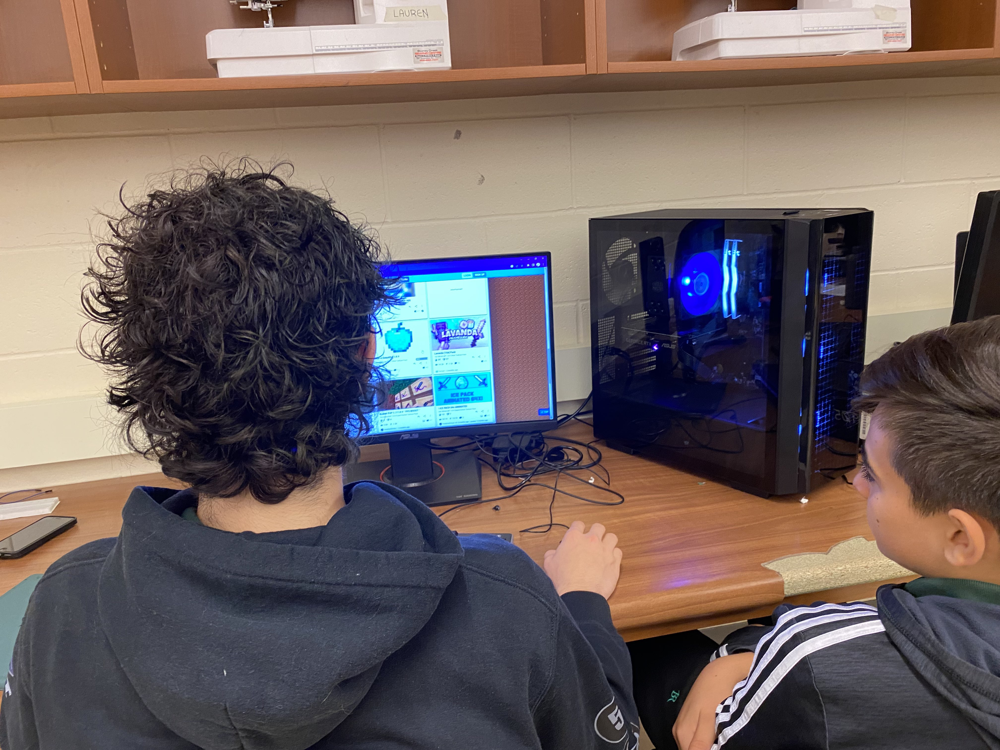
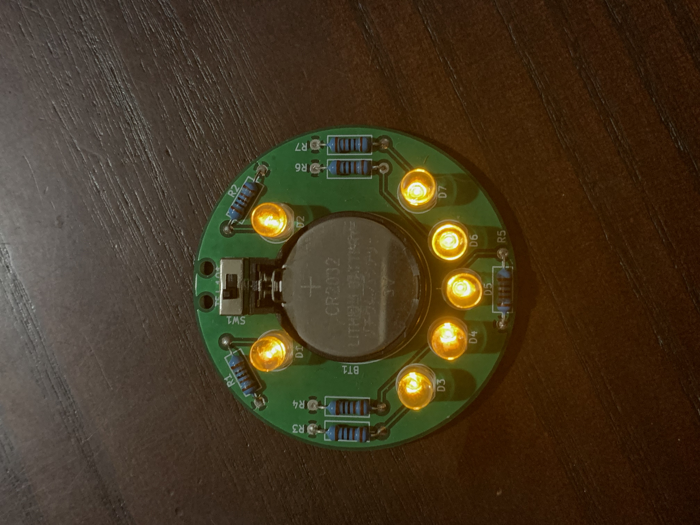
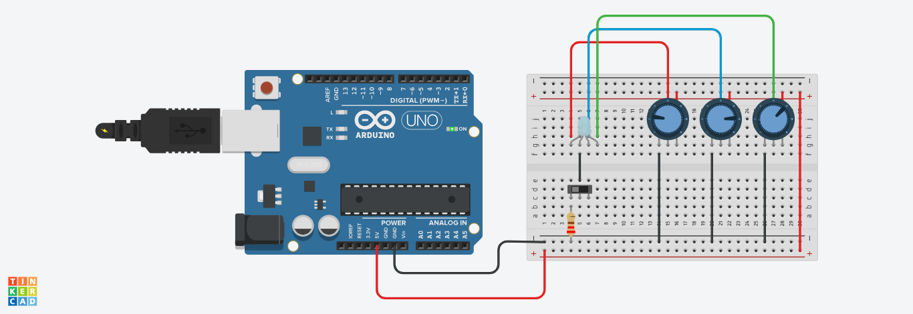
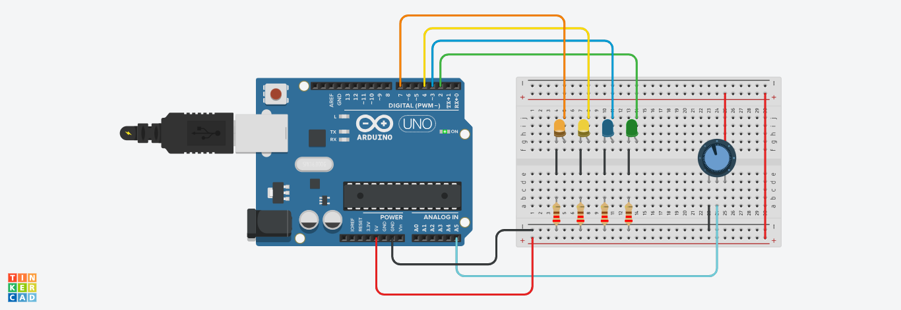

| Period | Course Code | Course | Teacher |
|---|---|---|---|
| 1 | ENG2D1 | English | Ms. Cobden |
| 2 | TEJ201 | Computer Engineering | Mr. Pagliari |
| 3 | PPL30G | Self-Defense Fitness | Ms. Kuiper |
| 4 | lunch | ||
| 5 | SNC2D1 | Science | Ms. Mazzuca |
Up until this project, I had 0 experience building computers or ANYTHING. This project originally terrified me, especially knowing that my team had no idea what we were doing, but we ended up doing a great job, and it was a really rewarding experience!
You can't see it in this photo, but we actually put stickers on the PC and made it retro inspired. Originally we wanted an older PC case for it too, but we realized that it would've been a) a lot of work b) way less efficient and c) cost a lot or be next to impossible to obtain, so we went with the stickers and a retro task bar instead.
I'm really proud of what we accomplished, and the fact that this computer actually works quite well just goes to show how capable we all are if we put the effort in.
Surprisingly, they let kids use a 400 degree stick in schools, so
that's exactly what we learned how to use (safely of course). After
passing the mandatory safety quiz, we got started on learning how to
solder on a smiley face PCB.
Here's the back:
Aaaand it working:

Pretty neat, right?
This year I made my second smiley face, and despite how daunting
soldering may appear, it's actually really fun!
We were given a bonus task to make a fully customizable rainbow LED using either pure electronics or a mix of arduino and hardware. I ended up going with pure electronics since it was far simpler. Here's the model and below is a photo of it:
Our final task for the electronics unit was to control whether 1, 2, 3, 4, or no LEDs were on using a potentiometer and an arduino. This meant that we would essentially divide 1023 (all the possible values on a potentiometer) evenly amongst the number of LEDs to figure out the increments for each LED turning on, and go from there. Here's the model and below is an image of it:
TinkerCAD is a great way to explore electronics without the need to buy parts or worry about breaking anything. It's also pretty beginner friendly with all of their example projects. It's also really nice to be able to ideate before actually building the physical circuit, just to make sure it works first.